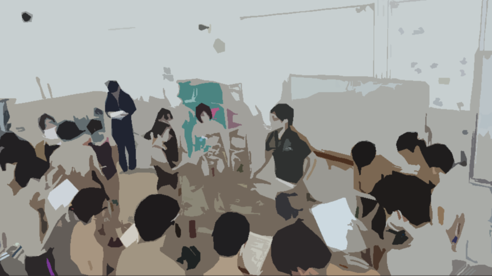
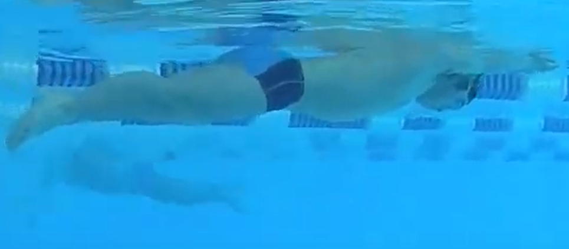
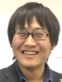

冬から泳ぎ始める共泳会ってナニモノ？
共泳会発足から8年目。当初は「冬場に、やる気がある選手で集まって練習しようぜ！」という趣旨で始まりました。冬にプールを借りて学校問わずやる気ある選手が揃い、刺激しあって練習してきました。素晴らしい選手とスタッフに恵まれ今があります。昨年からコロナ禍での施設キャンセルで、悔しい思いをしました。同時に「泳げる幸せ」、「大会がある幸せ」をかみしめました。泳げない状況で共泳会って「どんな理念？なにができるの？」を改めて考えました。今、「共泳会ってナニモノ？」と聞かれたらこう答えます。
共泳会は「あなたをゴールに近づける仲間」です。
「あなたをゴールに近づける」という言葉は、サッカーに例えるとわかりやすいでしょう。いろんな誘惑や妨害がある中、仲間に刺激を受けつつ、あなたの意思で仲間と連携しつつゴールに近づいて、「あなたが」ゴールを決める。そのゴールに近づく仲間が共泳会です。
「仲間」という言葉には、スタッフはもちろん選手も含みます。やる気のある選手同士の刺激は、いずれの選手をも目標(ゴール)に近づけると確信しています。「超一流指導が受けたい」「最先端の知識だけ教えてくれ」「あの人だけが頼り」という思いの選手には共泳会はあいません。

ゴールを達成する手段として、私達スタッフは指導する上で共泳会では「Focus(フォーカス)」という言葉を大切にしてきました。Focusは2つの意味を持ちます。
Focusとは「やることを絞り、集中して取り組む」こと。
「目指したいゴールがある」「やる気がある」。この２つをもって練習に来てくれればやるべきことをスタッフと話せます。話せれば、「やることを絞る→期間を区切る→集中して取り組む」という共泳会理想のサイクルがスタートできます。
Focusを通して、成長できている・目標に近づいている感覚を知ってほしいと思っています。共泳会はその手伝いをします。そういう意味で、選手主体の一方通行にならない指導を心がけています。
冬場から泳ぎ始める共泳会ですが、オンライン等を使用することで、共泳会としての練習が少なくなる夏場の大会までの指導も可能です。Focusという考えで生活をしていると、様々な情報を取捨選択し、優先度高いものに取り組む習慣がつくので、部活と共泳会などの両立は問題にならないものと考えています。
活動方針
中学生以上が参加できます。
学校単位ではなく、個人の意志による自主参加の練習会です。
公営プールのコースを借り利用します。
利用料は参加者で負担します。詳しくはスケジュールより。
ライフガード監視の元、安全に配慮して練習します。
感染症予防対策を実施した上で練習を行います。下記ご協力ください。
・各施設のガイドラインに従い活動します。施設までマスク着用で来て下さい。
・体温が37.5℃を超える場合、体調が優れない場合は参加をお控えください。
・練習当日は、スタッフより参加選手の体温や体調について確認致します。
参加までの流れ
1：活動日確認
HPトップにあるスケジュールより確認
2：参加申込
練習１週間前までに
・選手登録（初回のみ）
・参加申込
を完了させる。いずれもHPトップにあります。
3：返信確認
申込後、スタッフより返信があるので確認し完了。※返信のない場合はご連絡ください。
共泳会Q&A
Q：参加者の泳力はどのくらいですか？
A：中高生ともに都大会出場を目指す泳力の選手が多めですが、関東・全国大会含めより上の目指すレベルの選手もいます。
Q：練習についていけるか不安です。
A：練習ではサークル分けがあります。[B]サークルは100m2分サークルで複数本泳げる選手がこなせる強度です。メニュー例をご覧ください。
泳ぐ上での共泳会ルール…全員共通。強い選手になるために必要と考えていることです
①壁蹴り後は水中動作3回以上(除:Pull,Br)
②ラスト５ｍ無呼吸(Fr,Bu)
【W-up】
200*1 Ch(4'00")
50*4*4set [A](1'10") [B](1'20") Kick,Pull,Drill,Swim/set 種目混ぜながら
25*4(1'00") Max
【Swim】
100*6*2 [A](1'40") [B](2'00") S1,Fr/set
setrest1min
【Drill】
20min(自由にやることもあれば指定することもあります）
【Main】
50*4*3 (1'20") Ch,S1,Fr/set Des/t(1本ずつタイムをあげる）
setrest1min
【Summary】練習の最後に行う「今日のまとめ」Drillを復習する、メインで崩れた部分があれば確認する、等の「まとめ 」をする時間。
50*8(1'10") Ch
Q：学校のコーチからすでにやるべきトレーニングが提示されています。練習時に異なった視点のアドバイスがあると悩んでしまいます。
A：共泳会は、やることが決まっている選手には実践、定着の場として機能します。
・やりたい動作が実際にできているか水中撮影する
・スタッフに自分の考えを話す（話すことは思考整理になります。）
今までをみていると、そうした指示が出ている選手は多くありません。もし事前にトレーニング指示が出ている場合は申込時に教えてください。
Q：友達が参加するので一緒に参加してもよいですか？
A：友人との参加自体は構いませんが、いずれの選手も保護者に共泳会について説明した後に参加申込をしてください。1人が2人分の申込みをすることはできません。また感染管理と安全の観点から、見学希望は原則として受け付けていません（団体参加の際プールサイドにいられる人数が限られるため）。
Q：オンライン指導があると聞いたのですが？
A：要項を読んだ上で、申込みをしてください。
共泳会式オンライン指導「Hamit」
Q：高２です。初回参加してとても自分に合っていたので今後も参加したいのですが、受験もあり塾に通うか悩んでいます。塾に通うと日曜日も講習があるのでほとんど参加できなくなってしまいます
A：水泳も勉強も、成績をあげるために必要なことは変わらないと考えています。申込みの際やメールで連絡をしてください。若干名対象に水泳と勉強の両立サポートも実施しています。塾に通う前に一度お試しください。
共泳会参加者は、水泳と勉強との両立がうまく、多くの選手が高３夏まで水泳を続けて現役で大学に合格しています。後にその秘訣について聞いていたところ共通点が見られたので両立サポートに活かしています。
Q：結局どんな人が共泳会に向いているんですか？
A：
■共泳会向いている人の考え
・「目標はこれ！」でもどう努力したらいいのかちょっと不安
・チームで目標があり、自分は大会で○○秒だせば達成できそう。そうなったら最高だな。でもできるかなぁ
・目標もやり方もわかるけど、自分だけだと怠けてしまうので、やる気あふれる練習環境で泳ぎたい
■共泳会に向いていない人の考え
・目標はコーチに決めてほしい
・自分で目標決めたので、自分で考えるのは苦手なのであとはビシバシ指導してほしい。
・友達が参加するから来ました。目標はないし、友達がいるから来ただけなんで、友達以外の人と積極的に話すつもりはありません。
オンライン指導
共泳会参加者を対象としたオンライン指導を実施します。要項を読んだ上で、申込みをしてください。
共泳会式オンライン指導「Hamit」
参加選手のタイム推移
・各選手は学校練習等も並行して参加しています。ほとんどの選手が屋外プールをもつ学校に所属しています。
・タイムが改善した最大の成長要素は選手の工夫と努力です。共泳会の練習回数は年間20-30回と限られますが、共泳会で得た「トレーニング方法がわかった」「ライバルややる気ある仲間に出会えて高い意識を保てた」を選手が日頃の練習に活かしたことで成長に繋がった部分があると思っています。
・以上踏まえた上で、「共泳会がきっかけで速くなれた」と言ってくれた選手の一部を紹介します。
・特別に表記のない限りは、短水路の同じ大会でのタイムを記載しています
女子
H.Y.
200IM
2:34.0（高1）
2:30.1（高2）
2:28.9（高3） 優勝
H.S.
200Fr
2:35.4（高1）
2:31.1（高2）
2:26.6（高3）
400Fr
5:25.6（高1）
5:17.8（高2）
5:14.6（高3）
男子
H.K.
100Fr
1:00.0（高1）
0:54.9（高2）
0:54.1（高3）
200Fr
2:14.8（高1）
2:03.3（高2）
2:00.9（高3）
I.D.
50Fr（長水路）
24.7（高2）
24.2（高3） 全国大会標準記録突破
O.R.
100mFr
57.26（高1）予選18位敗退
54.10（高2）予選3位決勝5位
活動写真
画像は加工しています。また、コロナ禍前の写真を含みます
練習前の体操
合宿（メインメニューに向けて円陣）
大会（旗作って応援）
大会（集合写真）
水中撮影（月１回）

座学（不定期）
共泳会スタッフ
-

代表: 池田 佳弘(いけだ よしひろ)
1988年生。薬剤師。基礎水泳指導員。中央大学法学部卒。明治薬科大学薬学部卒。都立小石川中等教育学校水泳部コーチ(2008-2014)
-
ヘッドコーチ: 長谷川 公(はせがわ こう)
共泳会OB・戸山高校卒・一橋大学2年生。
アシスタント
共泳会OBG,本ヘッドコーチが練習のサポートに回ります
- Twitter: @kek_swim
- Gmail: kek.swim@gmail.com
トップへ戻る